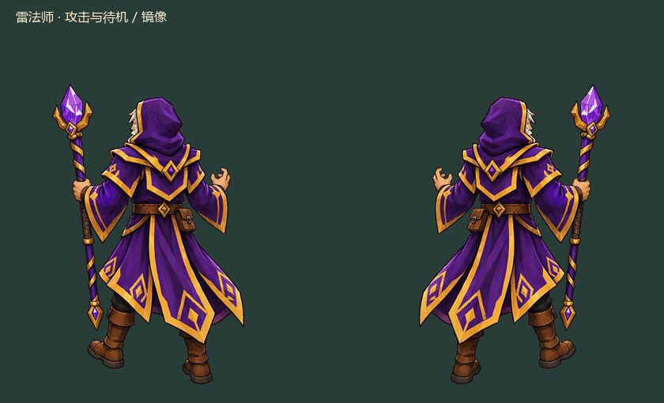

<!doctype html><html lang="zh-CN"><meta charset="utf-8"><meta name="viewport" content="width=device-width,initial-scale=1,viewport-fit=cover">
<title>雷法师 · 新攻击动作</title>
<style>*{box-sizing:border-box}body{margin:0;background:#17272e;color:#eef1e6;font:16px system-ui,'Microsoft YaHei',sans-serif}main{max-width:920px;margin:auto;padding:22px 16px 40px}h1{font-size:25px}h2{font-size:20px;margin-top:28px}p{color:#bed0c8;line-height:1.7}.pair{display:grid;grid-template-columns:1fr 1fr;gap:12px}figure{margin:0}figcaption{text-align:center;margin:8px 0;color:#cfddcc}canvas{display:block;width:100%;height:auto;border:1px solid #42544c;border-radius:10px;background:#293c3b}button,select{font:600 15px system-ui;color:#243228;background:#c0d799;border:0;border-radius:7px;padding:10px 12px;cursor:pointer}.toolbar,.links{display:flex;align-items:center;flex-wrap:wrap;gap:12px;margin:18px 0}a{color:#c7e1b3}input{accent-color:#c0d799;max-width:100%}img,video{display:block;width:100%;height:auto;object-fit:contain;border-radius:8px}output{color:#cfddcc}#error{color:#ffccb4}</style>
<main><h1>雷法师 · 新攻击动作</h1>
<p>轻微稳住重心，法杖向前伸出，再自然收回。这段攻击已应用到正式游戏，下面可对照当前待机，查看动作切换和左右镜像。</p>
<div class="toolbar"><button id="play">暂停</button><button id="restart">从头播放</button><label>模式 <select id="mode"><option value="cycle">待机 → 攻击 → 待机</option><option value="attack">单次攻击</option><option value="idle">当前待机</option></select></label><label>速度 <select id="speed"><option value="1">正常</option><option value="0.5">0.5 倍</option><option value="0.25">0.25 倍</option></select></label><button id="background">浅色背景</button></div>
<div class="toolbar"><label>进度 <input id="progress" type="range" min="0" max="4000" value="0" step="1"></label><output id="phase"></output><button id="previous">上一帧</button><button id="next">下一帧</button></div>
<div class="pair"><figure><canvas id="left"></canvas><figcaption>原向</figcaption></figure><figure><canvas id="right"></canvas><figcaption>镜像</figcaption></figure></div>
<h2>当前待机姿势对照</h2><canvas id="compare"></canvas>
<h2>游戏显示尺寸</h2><canvas id="battle"></canvas>
<h2>待机与攻击切换 GIF</h2>
<h2>你提供的原视频</h2><video src="source.mp4" controls muted playsinline preload="metadata"></video>
<div class="links"><a href="attack-mirror.gif">下载 GIF</a><a href="source.mp4">原视频</a><a href="contact-sheet.jpg">完整序列帧</a><a href="/">进入当前正式游戏</a></div><p id="error"></p></main>
<script>
(async()=>{
const image=async src=>{const im=new Image();im.src=src;await im.decode();return im};
const load=async(dir,kind)=>{const response=await fetch(`${dir}/${kind}.frames.json`);if(!response.ok)throw Error('素材加载失败');const m=await response.json(),images=await Promise.all((m.textures??[`${kind}.png`]).map(file=>image(`${dir}/${file}`)));let end=0;return{m,images,ends:m.animation.frames.map((_,i)=>end+=m.animation.frameDurations?.[i]??m.animation.seconds/m.animation.frames.length)}};
const[idle,attack,archer,sniper,floor,wall]=await Promise.all([load('.','idle'),load('.','attack'),load('archer','idle'),load('sniper','idle'),image('floor.png'),image('wall.png')]);
let playing=true,light=false,time=0,last=performance.now(),mode='cycle',speed=1;
const cycle=.7+attack.m.animation.seconds+.7,progress=document.querySelector('#progress');progress.max=Math.round(cycle*1000);
function context(id,w,h){const el=document.getElementById(id),d=Math.min(devicePixelRatio||1,3);if(el.width!==w*d||el.height!==h*d){el.width=w*d;el.height=h*d}const c=el.getContext('2d');c.setTransform(d,0,0,d,0,0);c.clearRect(0,0,w,h);return c}
function frame(c,t){let i=0;while(i<c.ends.length-1&&t>=c.ends[i])i++;const name=c.m.animation.frames[i];return{rect:c.m.frames[name],im:c.images[c.m.framePages?.[name]??0],index:i}}
function paint(c,clip,t,x,y,height,dir=1){const{rect,im}=frame(clip,t),m=clip.m,s=height/m.readyHeightPx;c.save();c.translate(x,y);c.scale(dir,1);c.drawImage(im,...rect,-m.groundAnchor[0]*s,-m.groundAnchor[1]*s,rect[2]*s,rect[3]*s);c.restore()}
function choose(){if(mode==='idle')return{clip:idle,t:time%idle.m.animation.seconds,label:'待机'};if(mode==='attack')return{clip:attack,t:Math.min(time,attack.m.animation.seconds),label:'攻击'};const p=time%cycle;if(p<.7)return{clip:idle,t:p,label:'待机'};if(p<.7+attack.m.animation.seconds)return{clip:attack,t:p-.7,label:'攻击 / 回位'};return{clip:idle,t:p-.7-attack.m.animation.seconds,label:'回到待机'}}
function panel(id,view,dir){const c=context(id,420,510);c.fillStyle=light?'#e8dfc5':'#293c3b';c.fillRect(0,0,420,510);c.strokeStyle=light?'#b8ac90':'#4a6158';c.beginPath();c.moveTo(15,486);c.lineTo(405,486);c.stroke();paint(c,view.clip,view.t,210,486,380,dir)}
function draw(){const view=choose();panel('left',view,1);panel('right',view,-1);const c=context('compare',840,510);c.fillStyle=light?'#e8dfc5':'#293c3b';c.fillRect(0,0,840,510);c.fillStyle=light?'#263b34':'#ecf0e3';c.font='17px system-ui';c.fillText('当前待机首帧',30,30);c.fillText('新动作',450,30);paint(c,idle,0,210,486,380);paint(c,view.clip,view.t,630,486,380);const b=context('battle',750,500);b.drawImage(floor,0,0,750,500);b.drawImage(wall,0,210,750,321);paint(b,archer,time%archer.m.animation.seconds,140,440,archer.m.displayHeight);paint(b,sniper,time%sniper.m.animation.seconds,370,440,sniper.m.displayHeight);paint(b,view.clip,view.t,600,440,idle.m.displayHeight);progress.value=Math.round((mode==='cycle'?time%cycle:Math.min(time,mode==='attack'?attack.m.animation.seconds:idle.m.animation.seconds))*1000);document.querySelector('#phase').textContent=`${view.label} · ${frame(view.clip,view.t).index+1}/${view.clip.m.animation.frames.length}`}
function pause(){playing=false;document.querySelector('#play').textContent='播放'}
document.querySelector('#play').onclick=e=>{playing=!playing;if(playing&&mode==='attack'&&time>=attack.m.animation.seconds)time=0;e.target.textContent=playing?'暂停':'播放'};
document.querySelector('#restart').onclick=()=>{time=0;playing=true;document.querySelector('#play').textContent='暂停';draw()};
document.querySelector('#mode').onchange=e=>{mode=e.target.value;time=0;progress.max=Math.round((mode==='cycle'?cycle:mode==='attack'?attack.m.animation.seconds:idle.m.animation.seconds)*1000);playing=true;document.querySelector('#play').textContent='暂停';draw()};
document.querySelector('#speed').onchange=e=>speed=Number(e.target.value);
document.querySelector('#background').onclick=e=>{light=!light;e.target.textContent=light?'深色背景':'浅色背景';draw()};
progress.oninput=e=>{pause();time=Number(e.target.value)/1000;draw()};
function step(direction){const current=choose();pause();if(current.clip!==attack){time=0;mode='attack';document.querySelector('#mode').value='attack';progress.max=Math.round(attack.m.animation.seconds*1000)}else{time=mode==='cycle'?time%cycle-.7:time;mode='attack';document.querySelector('#mode').value='attack';progress.max=Math.round(attack.m.animation.seconds*1000)}time=Math.max(0,Math.min(attack.m.animation.seconds-1/240,time+direction/24));draw()}
document.querySelector('#previous').onclick=()=>step(-1);document.querySelector('#next').onclick=()=>step(1);
function tick(now){const dt=Math.min((now-last)/1000,.1);last=now;if(playing){time+=dt*speed;if(mode==='attack'&&time>=attack.m.animation.seconds){time=attack.m.animation.seconds;pause()}draw()}requestAnimationFrame(tick)}draw();requestAnimationFrame(tick);
})().catch(error=>document.querySelector('#error').textContent=error.message+'，请刷新重试。');
</script></html>
